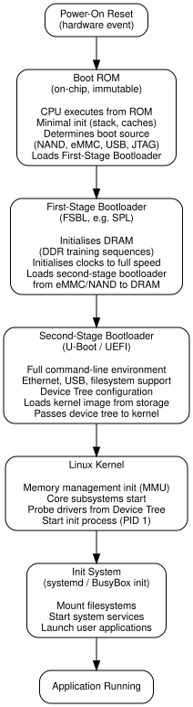
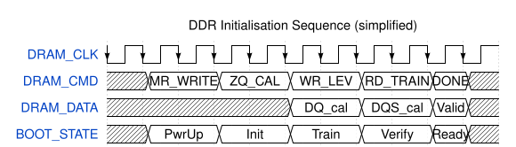

Series: Introduction to SoC Design | Article 11 of 11
{kind=link}
Introduction
Throughout this series, we have focused primarily on the hardware side of SoC design: the processors, memory, buses, and physical implementation. But a SoC without software is inert. The firmware that boots it, the operating system that manages its resources, the drivers that talk to its peripherals, and the applications that use it are just as important as the hardware itself.
HW/SW Co-Design is the discipline of designing hardware and software together, recognising that they are inseparable aspects of the same system. This article brings together the software side of the SoC story, covering the boot process, device drivers, the OS interface, and the co-design trade-offs that shape every product decision.
The HW/SW interface: where they meet
Hardware and software communicate through a small number of well-defined mechanisms:
{kind=link}
Memory-Mapped Registers
The primary interface between software and hardware on a SoC is memory-mapped I/O: every hardware block exposes a set of control and status registers (CSRs) at fixed addresses in the physical address space.
Typical UART Register Map (base address: 0x4000_0000):
Offset Register Access Description
--------------------------------------------------------
0x00 THR WO Transmit Holding Register
0x00 RBR RO Receive Buffer Register
0x04 IER RW Interrupt Enable Register
0x08 IIR RO Interrupt Identification
0x0C LCR RW Line Control (baud, parity)
0x10 MCR RW Modem Control
0x14 LSR RO Line Status (TX ready, RX data)
0x18 MSR RO Modem Status
0x1C SCR RW Scratch Register
To send a byte over UART, firmware: 1. Read LSR to check that the TX FIFO is not full. 2. Write the byte to THR. 3. Hardware takes over and drives the UART TX pin.
This read-modify-write register interface is the universal pattern for SoC firmware.
The Software Stack
The software on a SoC is organised in layers, each depending on the layer below it:
{kind=link}
The Boot Process
Bringing a SoC from cold power-up to a running operating system is a multi-stage process, each stage loading and executing the next:

DDR initialisation: a hardware-SW co-design example
One of the most hardware-specific firmware tasks is DDR initialisation. Modern LPDDR5 DRAM requires a training sequence: a complex set of calibration steps that establishes the optimal timing relationships between the SoC and the DRAM:

The FSBL writes a sequence of magic values to the DDR controller and DRAM mode registers, then reads test patterns back to calibrate write and read timing. Only after this sequence completes successfully can the rest of the software stack use DRAM.
Device Drivers
A device driver is the software module responsible for managing a specific hardware peripheral. Drivers abstract the hardware details, presenting a clean, standardised interface to higher software layers.
In Linux, a character device driver for a simple UART might look like:
/* Simplified UART platform driver skeleton */
#include <linux/platform_device.h>
#include <linux/serial_core.h>
#include <linux/io.h>
#define UART_THR 0x00
#define UART_LSR 0x14
#define LSR_THRE BIT(5) /* TX holding register empty */
static void uart_write_char(struct uart_port *port, unsigned int c)
{
/* Wait until TX FIFO has space */
while (!(readl(port->membase + UART_LSR) & LSR_THRE))
cpu_relax();
/* Write character to hardware register */
writel(c, port->membase + UART_THR);
}
static int uart_probe(struct platform_device *pdev)
{
struct resource *res;
void __iomem *base;
/* Get MMIO base address from device tree */
res = platform_get_resource(pdev, IORESOURCE_MEM, 0);
base = devm_ioremap_resource(&pdev->dev, res);
/* Register with Linux serial framework */
/* ... uart_add_one_port() ... */
return 0;
}
The Device Tree (DTS) is the mechanism by which Linux discovers what hardware is present without hard-coding it in the kernel:
/* Device Tree fragment for a UART */
uart0: serial@40000000 {
compatible = "myvendor,uart-v1";
reg = <0x40000000 0x100>; /* MMIO base, size */
interrupts = <GIC_SPI 32 IRQ_TYPE_LEVEL_HIGH>;
clocks = <&clk_periph>;
clock-names = "uartclk";
status = "okay";
};
When Linux boots, it reads the Device Tree, matches compatible strings to registered drivers, and calls the driver's probe() function for each matching node.
HW/SW Partitioning
The most important architectural decision in co-design is which functions to implement in hardware and which in software. This partitioning determines performance, power, flexibility, and development cost.
{kind=link}
Real trade-off examples
AES Encryption: - Software (Cortex-A, 1 core): ~300 MB/s, ~200 mW - Hardware accelerator: ~10 GB/s, ~5 mW - Decision: hardware, because encryption happens on every packet, latency is critical, and the algorithm is stable
JSON Parsing: - Software (optimised C): ~500 MB/s - Hardware: would require custom finite-state machine; format evolves - Decision: software, because flexibility matters more than raw speed
Video Decode (H.265): - Software (4 CPU cores): ~720p@30fps, ~2 W - Hardware codec: ~8K@120fps, ~50 mW - Decision: always hardware in a mobile SoC
Co-Simulation and Co-Verification
HW/SW co-design requires testing both halves together before silicon exists. There are several approaches:
Virtual platform and virtual prototype: a software model of the SoC, typically written in SystemC/Transaction-Level Modelling (TLM), that runs on a host workstation. The firmware binary is compiled for the target ISA and runs on an instruction-set simulator (ISS). This allows firmware development to begin before RTL is complete.
{kind=link}
FPGA prototyping: the RTL is synthesised onto one or more large FPGAs, running at 5-50 MHz. Real firmware and software run on the FPGA, providing a cycle-accurate model that can run full Linux. FPGA prototyping boards (Xilinx VCU118, Intel Stratix 10) are essential tools for pre-silicon software development.
Hardware emulation: as discussed in Article 10, emulators compile the RTL into custom FPGAs that run at MHz speeds, supporting real-time testing with actual peripherals.
The RTOS vs Linux choice
For the CPU running on a SoC, a fundamental software decision is operating system choice:
| OS Type | Examples | Best For |
|---|---|---|
| Bare Metal | None | Ultra-simple, few ms startup, max performance |
| RTOS | FreeRTOS, Zephyr, ThreadX | Hard real-time, < 1ms interrupt latency |
| Linux | Linux, Android | Feature-rich, large driver ecosystem, networking |
| Hypervisor | Xen, KVM | Running multiple OSes simultaneously (automotive, industrial) |
Many SoCs run both: a Cortex-M managing power and safety-critical functions runs an RTOS (real-time operating system) or bare metal, while a Cortex-A cluster running Linux or Android handles the application layer. This heterogeneous multi-OS configuration is increasingly common.
IP Management and Reuse
As noted in Article 02, IP reuse is central to managing SoC complexity. Co-design extends this to include software deliverables alongside hardware IP:
A well-packaged IP block delivers: - RTL source (encrypted or open) - Testbench and UVM verification environment - Device driver (Linux kernel module or RTOS driver) - Register description file (IP-XACT, SystemRDL) for automatic header/driver generation - Reference firmware (bare-metal startup, peripheral init code) - Documentation (Technical Reference Manual, integration guide)
Increasingly, EDA tools automatically generate C header files and Linux device tree bindings from the hardware register descriptions, reducing the human effort and error risk in the software-hardware interface.
Looking back: the complete picture
We have now traversed the entire SoC landscape:
- Article 01: From room to silicon: integration, motivation, anatomy
- Article 02: What is a System on Chip: anatomy, motivation, IP cores
- Article 03: The SoC design stack: abstraction layers, IP cores, Y-chart
- Article 04: Processor cores: CPU, DSP, GPU, NPU, big.LITTLE
- Article 05: Memory architecture: cache hierarchy, DRAM, MMU
- Article 06: Interconnects and bus protocols: AXI, AHB, APB, crossbar, NoC
- Article 07: Clocking, reset, and power domains: PLL, CDC, DVFS, power gating
- Article 08: Peripherals and I/O: UART, SPI, I2C, USB, DMA, IRQ
- Article 09: HDL and RTL design: SystemVerilog, FSM, simulation
- Article 10: The SoC design flow: spec to RTL to synthesis to P&R to tape-out
Where to Go Next
With the introductory series complete, you are ready to explore the intermediate topics. These build directly on the foundations laid here:
Intermediate series (10 articles)
- AXI4 Protocol Deep Dive: burst types, out-of-order, QoS, debug
- Cache Coherency Protocols: MESI in hardware, multi-core coherency
- Pipeline Design and Hazards: forwarding, stalling, branch prediction basics
- RTL Synthesis and Timing Closure: SDC, STA, ECO flows
- Clock Domain Crossing Techniques: synchronisers, async FIFOs, CDC analysis tools
- SoC Verification with UVM: agents, sequences, scoreboards, coverage
- DMA Controller Architecture: descriptor chains, scatter-gather, QoS
- Interrupt Controllers in Depth: GIC, NVIC, priority, virtualization extensions
- Memory-Mapped I/O and Linux Device Drivers: writing real kernel drivers
- SoC Power Management Techniques: DVFS governors, CPUIdle, power domains in Linux
Advanced series (10 articles)
- Out-of-Order Execution Architecture: Tomasulo, ROB, reservation stations
- Network-on-Chip Design: topology, routing, flow control, virtual channels
- DRAM Subsystem Timing: LPDDR5 protocol, refresh, power states, thermal throttle
- Physical Design: Floorplanning and P&R: CTS, ECO, IR drop, antenna effects
- Hardware Security in SoC: TrustZone, secure boot, side-channel attacks
- AI/ML Accelerator Architecture: systolic arrays, dataflow, memory bandwidth analysis
- Formal Verification Methods: model checking, SVA, property specification languages
- Post-Silicon Debug and Validation: JTAG, CoreSight ETM, scan chains
- FPGA-Based SoC Design: Zynq-7000, Cyclone V HPS, PetaLinux
- Heterogeneous SoC Partitioning: HW/SW co-exploration, automated co-design tools
Summary
HW/SW co-design recognises that hardware and software are two facets of the same system: neither is meaningful without the other. The boot process takes a SoC from silicon power-on to a running application through several carefully orchestrated stages. Device drivers form the critical interface between the operating system and hardware registers. The partitioning of function between hardware and software is the most impactful architectural decision. Virtual platforms, FPGA prototypes, and emulators allow software development to proceed before silicon is available. Mastering co-design is what separates SoC systems engineers from specialists who know only one half of the system.
Previous: Article 10: The SoC design flow